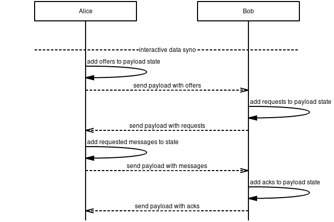
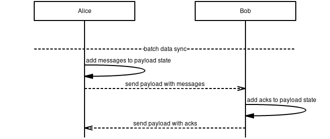

2/MVDS
Timeline
- 2025-12-22 —
b1a5783— Chore/mdbook updates (#237) - 2025-12-18 —
d03e699— ci: add mdBook configuration (#233) - 2024-09-13 —
3ab314d— Fix Files for Linting (#94) - 2024-06-28 —
a5b24ac— fix_: broken image links (#81) - 2024-02-01 —
0253d53— Rename MVDS.md to mvds.md - 2024-01-30 —
70326d1— Rename MVDS.md to MVDS.md - 2024-01-27 —
472a7fd— Rename vac/rfcs/02/README.md to vac/02/MVDS.md - 2024-01-25 —
4362a7b— Create README.md
In this specification, we describe a minimum viable protocol for data synchronization inspired by the Bramble Synchronization Protocol (BSP). This protocol is designed to ensure reliable messaging between peers across an unreliable peer-to-peer (P2P) network where they may be unreachable or unresponsive.
We present a reference implementation1 including a simulation to demonstrate its performance.
Definitions
| Term | Description |
|---|---|
| Peer | The other nodes that a node is connected to. |
| Record | Defines a payload element of either the type OFFER, REQUEST, MESSAGE or ACK |
| Node | Some process that is able to store data, do processing and communicate for MVDS. |
Wire Protocol
Secure Transport
This specification does not define anything related to the transport of packets. It is assumed that this is abstracted in such a way that any secure transport protocol could be easily implemented. Likewise, properties such as confidentiality, integrity, authenticity and forward secrecy are assumed to be provided by a layer below.
Payloads
Payloads are implemented using protocol buffers v3.
syntax = "proto3";
package vac.mvds;
message Payload {
repeated bytes acks = 5001;
repeated bytes offers = 5002;
repeated bytes requests = 5003;
repeated Message messages = 5004;
}
message Message {
bytes group_id = 6001;
int64 timestamp = 6002;
bytes body = 6003;
}
The payload field numbers are kept more "unique" to ensure no overlap with other protocol buffers.
Each payload contains the following fields:
- Acks: This field contains a list (can be empty)
of
message identifiersinforming the recipient that sender holds a specific message. - Offers: This field contains a list (can be empty)
of
message identifiersthat the sender would like to give to the recipient. - Requests: This field contains a list (can be empty)
of
message identifiersthat the sender would like to receive from the recipient. - Messages: This field contains a list of messages (can be empty).
Message Identifiers: Each message has a message identifier calculated by
hashing the group_id, timestamp and body fields as follows:
HASH("MESSAGE_ID", group_id, timestamp, body);
Group Identifiers: Each message is assigned into a group
using the group_id field,
groups are independent synchronization contexts between peers.
The current HASH function used is sha256.
Synchronization
State
We refer to state as set of records for the types OFFER, REQUEST and
MESSAGE that every node SHOULD store per peer.
state MUST NOT contain ACK records as we do not retransmit those periodically.
The following information is stored for records:
- Type - Either
OFFER,REQUESTorMESSAGE - Send Count - The amount of times a record has been sent to a peer.
- Send Epoch - The next epoch at which a record can be sent to a peer.
Flow
A maximum of one payload SHOULD be sent to peers per epoch,
this payload contains all ACK, OFFER, REQUEST and
MESSAGE records for the specific peer.
Payloads are created every epoch,
containing reactions to previously received records by peers or
new records being sent out by nodes.
Nodes MAY have two modes with which they can send records:
BATCH and INTERACTIVE mode.
The following rules dictate how nodes construct payloads
every epoch for any given peer for both modes.
NOTE: A node may send messages both in interactive and in batch mode.
Interactive Mode
- A node initially offers a
MESSAGEwhen attempting to send it to a peer. This means anOFFERis added to the next payload and state for the given peer. - When a node receives an
OFFER, aREQUESTis added to the next payload and state for the given peer. - When a node receives a
REQUESTfor a previously sentOFFER, theOFFERis removed from the state and the correspondingMESSAGEis added to the next payload and state for the given peer. - When a node receives a
MESSAGE, theREQUESTis removed from the state and anACKis added to the next payload for the given peer. - When a node receives an
ACK, theMESSAGEis removed from the state for the given peer. - All records that require retransmission are added to the payload,
given
Send Epochhas been reached.

Figure 1: Delivery without retransmissions in interactive mode.
Batch Mode
- When a node sends a
MESSAGE, it is added to the next payload and the state for the given peer. - When a node receives a
MESSAGE, anACKis added to the next payload for the corresponding peer. - When a node receives an
ACK, theMESSAGEis removed from the state for the given peer. - All records that require retransmission are added to the payload,
given
Send Epochhas been reached.

Figure 2: Delivery without retransmissions in batch mode.
NOTE: Batch mode is higher bandwidth whereas interactive mode is higher latency.
Retransmission
The record of the type Type SHOULD be retransmitted
every time Send Epoch is smaller than or equal to the current epoch.
Send Epoch and Send Count MUST be increased every time a record is retransmitted.
Although no function is defined on how to increase Send Epoch,
it SHOULD be exponentially increased until reaching an upper bound
where it then goes back to a lower epoch in order to
prevent a record's Send Epoch's from becoming too large.
NOTE: We do not retransmission
ACKs as we do not know when they have arrived, therefore we simply resend them every time we receive aMESSAGE.
Formal Specification
MVDS has been formally specified using TLA+: https://github.com/vacp2p/formalities/tree/master/MVDS.
Acknowledgments
- Preston van Loon
- Greg Markou
- Rene Nayman
- Jacek Sieka
Copyright
Copyright and related rights waived via CC0.